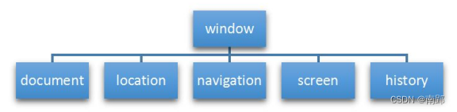
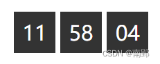
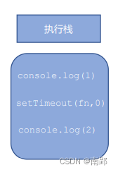
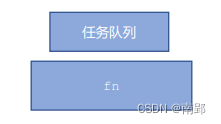
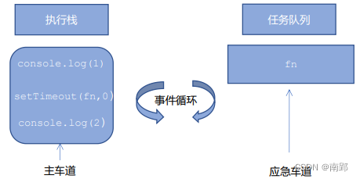
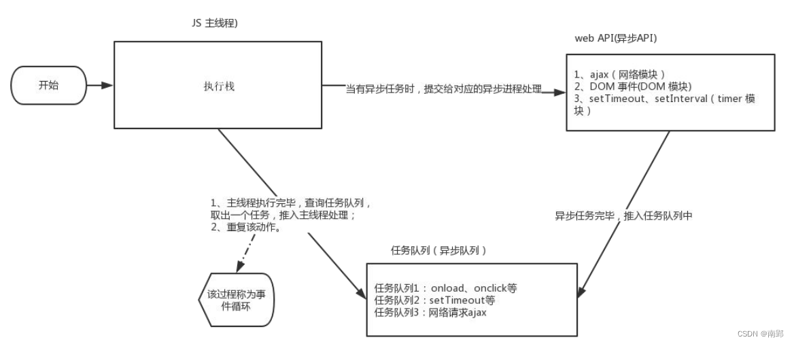

一、BOM概述
- BOM（Browser Object Model），即浏览器对象模型，它提供了独立于内容而与浏览器窗口进行交互的对象，其核心对象是 window
- BOM 由一系列相关的对象构成，并且每个对象都提供了很多方法与属性
- BOM 缺乏标准，JavaScript 语法的标准化组织是 ECMA, DOM 的标准化组织是 W3C, BOM最初是Netscape 浏览器标准的一部分
| DOM | BOM |
|---|---|
| 文档对象模型 | 浏览器对象模型 |
| DOM 就是把文档当作一个对象来看待 | 把浏览器当作一个对象来看待 |
| DOM 的顶级对象是 document | BOM 的顶级对象是 window |
| DOM 主要学习的是操作页面元素 | BOM 学习的是浏览器窗口交互的一些对象 |
| DOM 是 W3C 标准规范 | BOM 是浏览器厂商在各自浏览器上定义的，兼容性较差 |
1. BOM的构成
BOM 比 DOM 更大。它包含 DOM。

window 对象是浏览器的顶级对象，它具有双重角色
- 它是 JS 访问浏览器窗口的一个接口
- 它是一个全局对象。定义在全局作用域中的变量、函数都会变成 window 对象的属性和方法
在调用的时候可以省略 window，前面学习的对话框都属于 window 对象方法，如 alert()、prompt()等。
注意：window下有一个特殊属性 window.name，在定义变量时不要使用name这个名称
二、window 对象的常见事件
1. 窗口加载事件
window.onload是窗口（页面）加载事件，当文档内容完全加载完成会触发该事件（包括图像，脚本文件，CSS文件等），就调用的处理函数。
window.onload = function(){
};
// 或者
window.addEventListener("load",function(){});注意：
- 有了
window.onload就可以把JS代码写到页面元素的上方，因为onload是等页面内容全部加载完毕，再去执行处理函数 window.onload传统注册事件方式，只能写一次；如果有多个，会以最后一个为准- 如果使用
addEventListener则没有限制
document.addEventListener('DOMContentLoaded',function(){})DOMCountentLoaded事件触发时，仅当DOM加载完成，不包括样式表，图片，flash等等
如果页面的图片很多的话, 从用户访问到onload触发可能需要较长的时间，交互效果就不能实现，必然影响用户的体验。此时用
DOMContentLoaded事件比较合适。
2. 调整窗口大小事件
window.onresize 是调整窗口大小加载事件，当触发时就调用的处理函数
window.onresize = function() {}
// 或者
window.addEventListener('resize',function(){});- 只要窗口大小发生像素变化，就会触发这个事件
- 我们经常利用这个事件完成响应式布局。
window.innerWidth当前屏幕的宽度
<body>
<script>
window.addEventListener('load', function() {
var div = document.querySelector('div');
window.addEventListener('resize', function() {
console.log(window.innerWidth);
console.log('变化了');
if (window.innerWidth <= 800) {
div.style.display = 'none';
} else {
div.style.display = 'block';
}
})
})
</script>
<div></div>
</body>三、定时器
window 对象给我们提供了两个定时器
setTimeout()setInterval()
1. setTimeout() 定时器
setTimeout()方法用于设置一个定时器，该定时器在定时器到期后执行调用函数。
window.setTimeout(调用函数,[延迟的毫秒数]);注意：
window可以省略- 这个调用函数
- 可以直接写函数
- 或者写函数名
- 或者采取字符串 ‘函数名()’（不推荐）
- 延迟的毫秒数省略默认是0，如果写，必须是毫秒
- 因为定时器可能有很多，所以我们经常给定时器赋值一个标识符
setTimeout()这个调用函数我们也称为回调函数 callback- 普通函数是按照代码顺序直接调用，而这个函数，需要等待时间，时间到了才会回头去调用这个函数，因此称为回调函数。
- 以前我们讲的
element.onclick = function(){}或者element.addEventListener(“click”, fn);里面的 函数也是回调函数。
- 以前我们讲的
2. clearTimeout() 停止定时器
clearTimeout()方法取消了先前通过调用setTimeout()建立的定时器
window.clearTimeout(timeoutID)- 里面的参数就是定时器的标识符
<body>
<button>点击停止定时器</button>
<script>
var btn = document.querySelector('button');
var timer = setTimeout(function() {
console.log('爆炸了');
}, 5000);
btn.addEventListener('click', function() {
clearTimeout(timer);
})
</script>
</body>3. setInterval() 定时器
setInterval()方法重复调用一个函数，每隔这个时间，就去调用一次回调函数
window.setInterval(回调函数,[间隔的毫秒数]);注意：
window可以省略- 这个回调函数:
- 可以直接写函数
- 或者写函数名
- 或者采取字符 ‘函数名()’
- 第一次执行也是间隔毫秒数之后执行，之后每隔毫秒数就执行一次
案例：倒计时效果
- 这个倒计时是不断变化的，因此需要定时器来自动变化（setInterval）
- 三个黑色盒子里面分别存放时分秒
- 三个黑色盒子利用innerHTML 放入计算的小时分钟秒数
- 第一次执行也是间隔毫秒数，因此刚刷新页面会有空白
- 最好采取封装函数的方式， 这样可以先调用一次这个函数，防止刚开始刷新页面有空白问题

- 最好采取封装函数的方式， 这样可以先调用一次这个函数，防止刚开始刷新页面有空白问题
<body>
<div>
<span class="hour">1</span>
<span class="minute">2</span>
<span class="second">3</span>
</div>
<script>
var hour = document.querySelector('.hour');
var minute = document.querySelector('.minute');
var second = document.querySelector('.second');
var inputTime = +new Date('2023-01-22 00:00:00'); // 设定目标时间，并求目标时间的总毫秒数
countDown();//先调用一次,防止刷新出现空白间隔1s
setInterval(countDown, 1000);
function countDown() {
var nowTime = +new Date(); // 返回的是当前时间总的毫秒数
var times = (inputTime - nowTime) / 1000; // times是剩余时间总的秒数
var h = parseInt(times / 60 / 60); //时
h = h < 10 ? '0' + h : h;
hour.innerHTML = h; // 把剩余的小时给 小时黑色盒子
var m = parseInt(times / 60 % 60); // 分
m = m < 10 ? '0' + m : m;
minute.innerHTML = m;
var s = parseInt(times % 60); // 当前的秒
s = s < 10 ? '0' + s : s;
second.innerHTML = s;
}
</script>
</body>4. clearInterval() 停止定时器
clearInterval()方法取消了先前通过调用setInterval()建立的定时器
window.clearInterval(intervalID);注意：
window可以省略- 里面的参数就是定时器的标识符
案例：发送短信
点击按钮后，该按钮3秒之内不能再次点击，防止重复发送短信
- 按钮点击之后，会禁用 disabled 为true
- 同时按钮里面的内容会变化， 注意 button 里面的内容通过 innerHTML修改
- 里面秒数是有变化的，因此需要用到定时器
- 定义一个变量，在定时器里面，不断递减
- 如果变量为0 说明到了时间，我们需要停止定时器，并且复原按钮初始状态。
<body>
手机号码：<input type="number"> <button>发送</button>
<script>
var btn = document.querySelector('button');
var time = 3;
btn.addEventListener('click', function () {
this.disabled = true; // 按钮不可点击
var timer = setInterval(function () {
if (time == 0) {
clearInterval(timer);
btn.disabled = false;
btn.innerHTML = '发送';
time = 3;
} else {
btn.innerHTML = '还剩下' + time-- + 's';
}
}, 1000);
})
</script>
</body>5. this指向
this的指向在函数定义的时候是确定不了的，只有函数执行的时候才能确定this到底指向谁
现阶段，我们先了解一下几个this指向：
- 全局作用域或者普通函数中
this指向全局对象window(注意定时器里面的this指向window) - 方法调用中谁调用
this指向谁 - 构造函数中
this指向构造函数实例
<body>
<button>点击</button>
<script>
// 1. 全局作用域或者普通函数中this指向全局对象window（ 注意定时器里面的this指向window）
console.log(this);
function fn() {
console.log(this);
}
window.fn();
window.setTimeout(function() {
console.log(this);
}, 1000);
// 2. 方法调用中谁调用this指向谁
var o = {
sayHi: function() {
console.log(this); // this指向的是 o 这个对象
}
}
o.sayHi();
var btn = document.querySelector('button');
btn.addEventListener('click', function() {
console.log(this); // this指向的是btn这个按钮对象
})
// 3. 构造函数中this指向构造函数的实例
function Fun() {
console.log(this); // this 指向的是fun的实例对象Fun()
}
var fun = new Fun();
</script>
</body>四、JS执行机制
1. JS是单线程
- JavaScript 语言的一大特点就是单线程，也就是说，同一个时间只能做一件事。这是因为 Javascript 这门脚本语言诞生的使命所致——JavaScript 是为处理页面中用户的交互，以及操作 DOM 而诞生的。比如我们对某个 DOM 元素进行添加和删除操作，不能同时进行。 应该先进行添加，之后再删除。
- 单线程就意味着，所有任务需要排队，前一个任务结束，才会执行后一个任务。这样所导致的问题是： 如果 JS 执行的时间过长，这样就会造成页面的渲染不连贯，导致页面渲染加载阻塞的感觉。
2. 一个问题
以下代码执行的结果是什么？
console.log(1);
setTimeout(function() {
console.log(3);
},1000);
console.log(2);
// 1 2 3那么以下代码执行的结果又是什么？
console.log(1);
setTimeout(function() {
console.log(3);
},0);
console.log(2);
// 1 2 33. 同步和异步
- 为了解决这个问题，利用多核 CPU 的计算能力，HTML5 提出 Web Worker 标准，允许 JavaScript 脚本创建多个线程
- 于是，JS 中出现了同步和异步。
- 同步:
- 前一个任务结束后再执行后一个任务
- 异步：
- 在做这件事的同时，你还可以去处理其他事情
3.1 同步任务
- 同步任务都在主线程上执行，形成一个执行栈

3.2 异步任务
- JS中的异步是通过回调函数实现的
- 异步任务有以下三种类型
- 普通事件，如
click，resize等 - 资源加载，如
load，error等 - 定时器，包括
setInterval，setTimeout等
- 普通事件，如
- 异步任务相关回调函数添加到任务队列中

- 先执行执行栈中的同步任务
- 异步任务(回调函数)放入任务队列中
- 一旦执行栈中的所有同步任务执行完毕，系统就会按次序读取任务队列中的异步任务，于是被读取的异步任务结束等待状态，进入执行栈，开始执行


由于主线程不断的重复获得任务、执行任务、再获取任务、再执行，所以这种机制被称为事件循环（ event loop）。
五、location 对象
- window 对象给我们提供了一个
location属性用于获取或者设置窗体的url，并且可以解析url。因为这个属性返回的是一个对象，所以我们将这个属性也称为 location 对象。
1. url
==统一资源定位符（uniform resouce locator）是互联网上标准资源的地址==。互联网上的每个文件都有一个唯一的 URL，它包含的信息指出文件的位置以及浏览器应该怎么处理它。
url 的一般语法格式为：
protocol://host[:port]/path/[?query]#fragment
http://www.itcast.cn/index.html?name=andy&age=18#link| 组成 | 说明 |
|---|---|
| protocol | 通信协议 常用的http,ftp,maito等 |
| host | 主机(域名) 如www.baidu.com |
| port | 端口号，可选 |
| path | 路径 由零或多个’/‘符号隔开的字符串 |
| query | 参数 以键值对的形式，通过&符号分隔开来 |
| fragment | 片段 #后面内容 常见于链接、锚点 |
2. location 对象属性
| location对象属性 | 返回值 |
|---|---|
location.href |
获取或者设置整个URL |
location.host |
返回主机（域名）www.baidu.com |
location.port |
返回端口号，如果未写返回空字符串 |
location.pathname |
返回路径 |
location.search |
返回参数 |
location.hash |
返回片段 #后面内容常见于链接 锚点 |
重点记住： href和search |
案例1：5s之后跳转页面
<body>
<button>点击</button>
<div></div>
<script>
var btn = document.querySelector('button');
var div = document.querySelector('div');
var timer = 5;
setInterval(function() {
if (timer == 0) {
location.href = 'http://www.itcast.cn';
} else {
div.innerHTML = '您将在' + timer + '秒钟之后跳转到首页';
timer--;
}
}, 1000);
</script>
</body>案例2：获取 URL 参数数据
- 第一个登录页面，里面有提交表单， action 提交到 index.html页面
- 第二个页面，可以使用第一个页面的参数，这样实现了一个数据不同页面之间的传递效果
- 第二个页面之所以可以使用第一个页面的数据，是利用了URL 里面的 location.search参数
- 在第二个页面中，需要把这个参数提取。
- 第一步去掉？ 利用
substr - 第二步 利用=号分割键和值
split('=') - 第一个数组就是键 第二个数组就是值
- 第一步去掉？ 利用
简单写一个登录框，点击登录跳转到 index.html
<body>
<form action="index.html">
用户名： <input type="text" name="uname">
<input type="submit" value="登录">
</form>
</body>接下来我们写 index.html
<body>
<div></div>
<script>
console.log(location.search); // ?uname=andy
// 1.先去掉？ substr('起始的位置'，截取几个字符);
var params = location.search.substr(1); // uname=andy
console.log(params);
// 2. 利用=把字符串分割为数组 split('=');
var arr = params.split('=');
console.log(arr); // ["uname", "ANDY"]
var div = document.querySelector('div');
// 3.把数据写入div中
div.innerHTML = arr[1] + '欢迎您';
</script>
</body>3. location 对象方法
| location对象方法 | 返回值 |
|---|---|
location.assign() |
跟href一样，可以跳转页面（也称为重定向页面） |
location.replace() |
替换当前页面，因为不记录历史，所以不能后退页面 |
location.reload() |
重新加载页面，相当于刷新按钮或者f5；如果参数为true 强制刷新，相当于ctrl+f5 |
六、navigator 对象
- navigator 对象包含有关浏览器的信息，它有很多属性
- 我们常用的是
userAgent,该属性可以返回由客户机发送服务器的user-agent头部的值
下面前端代码可以判断用户是用哪个终端打开页面的，如果是用 PC 打开的，我们就跳转到 PC 端的页面，如果是用手机打开的，就跳转到手机端页面
if((navigator.userAgent.match(/(phone|pad|pod|iPhone|iPod|ios|iPad|Android|Mobile|BlackBerry|IEMobile|MQQBrowser|JUC|Fennec|wOSBrowser|BrowserNG|WebOS|Symbian|Windows Phone)/i))) {
window.location.href = ""; //手机
} else {
window.location.href = ""; //电脑
}七、history对象
- window 对象给我们提供了一个 history 对象，与浏览器历史记录进行交互
- 该对象包含用户（在浏览器窗口中）访问过的 URL。
| history对象方法 | 作用 |
|---|---|
back() |
后退功能 |
forward() |
前进功能 |
go(参数) |
前进后退功能，参数如果是 1 前进1个页面 如果是 -1 后退1个页面 |